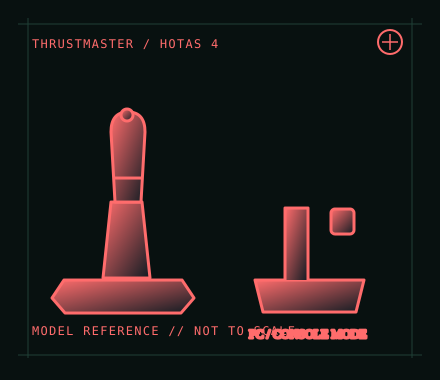

[ JOYSTICK CONTROLLERS // IDENTIFIED COMPONENT ]
Thrustmaster T.Flight HOTAS 4
Console-oriented wired flight stick and detachable throttle set for PlayStation and compatible PC titles.

MODEL IDENTIFICATION: Thrustmaster T.Flight HOTAS 4; check the underside label, connector condition and product revision. Published family specifications may not establish the revision or condition of an individual unit; compare its label and included parts with the linked documentation.
Model specifications
| Catalog subcategory | Joystick controllers |
|---|---|
| Exact model / identifier | Thrustmaster T.Flight HOTAS 4; check the underside label, connector condition and product revision. |
| Design and controls | Stick and detachable throttle, twist-rudder function with locking option, integrated controls and an accessory connection for compatible rudder pedals. Layout and platform licensing distinguish this model from HOTAS One. |
| Physical interface | Single wired USB connection to the host; mode/platform behavior is model-specific. It is licensed for PlayStation 4 and compatible PlayStation 5 games, with PC use through the manufacturer’s Windows driver and the device’s PC setting where applicable. |
| Host compatibility | PlayStation 4 and supported PlayStation 5 titles, plus Windows PC according to Thrustmaster support. It is not an Xbox controller. Console support is title/platform-level, not a guarantee that every PS5 flight game accepts a HOTAS. |
| Driver and configuration | Use the official T.Flight HOTAS 4 support page for the model manual, Windows drivers and firmware information. Install the current PC package for PC use; on console, use the system’s supported USB connection and game compatibility list. |
Setup and control mapping
Configure pitch, roll, twist rudder and throttle in the chosen game. On PC, check the device mode before calibration and map the axes in the game after installing the vendor package. Confirm the game explicitly supports this PlayStation HOTAS on the intended console generation.
Before use, connect the device directly to the stated host, confirm it appears once in the operating system’s controller list, and test every axis and button. Keep host calibration separate from in-game dead-zone and sensitivity settings so later maintenance can reproduce the baseline.
Preservation and service notes
Check the throttle-to-stick latch, USB lead and rudder-pedal socket, and test twist lock/unlock before play. Avoid forcing the detachable throttle or storing the set under cable strain; preserve the manual with platform and firmware notes.
Revision caveat: HOTAS 4, HOTAS One and newer T.Flight variants are not cross-platform equivalents. The currently discoverable Thrustmaster product route may lead to a replacement model, so use the model-specific support materials and label for identification.
For a physical archive entry, record the as-found label, serial/part number where present, accessories, host OS, driver or firmware version, and test method. Separate observed condition from published specifications.
References and support
- T.Flight HOTAS 4 support, drivers and manuals — ThrustmasterOfficial model-specific support page with setup and downloadable documentation.
- T.Flight HOTAS 4 user manual — ThrustmasterModel-specific manufacturer manual for the HOTAS 4; verify the product label and manual revision.
- T.Flight HOTAS 4 product listing — ThrustmasterManufacturer’s product route; currently may redirect to the successor page, so identify the hardware using the model-specific support page and manual.
Vendor pages and downloads can be revised or retired. Preserve the applicable manual locally and note its revision; use the exact product label when choosing firmware or drivers.